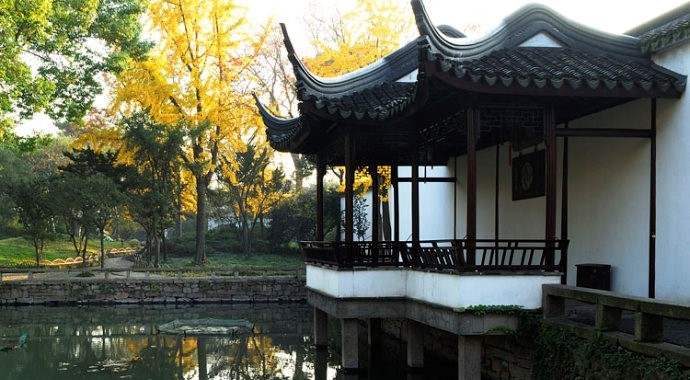

涵青亭
园林建筑，以亭的变化为多。亭是一种只有屋顶而没有墙的小屋，玲珑轻巧，一般由屋顶、柱身和台基三部分组成。在园林中可点景、观景，又可供人小憩、纳凉、避雨。
抽政园不仅亭多，而且形式不一。涵青亭居于一隅，空间范围比较逼仄。但造园家以高大的白墙作底，建了一座组合式的半亭，一主二从，主亭平座挑出于水面之上，犹如水榭，两侧副亭略向后退，朝左右展开，似廊又非廊，主亭发两只戗，副亭发一只戗，整座亭子犹如一只展翅欲飞的凤凰，给本来平直、单调的墙体增添了飞舞的动势。斜倚亭边美人靠小坐，天光云影水间，锦鲤遨游，荷莲轻荡。